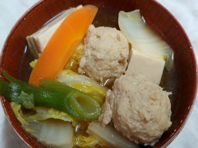

鶏の唐揚げ

作り方
- 鶏肉を小口に切って下味の調味料を入れてませ合わせ1時間から1日つける。
- 衣用の片栗粉を1に入れて、フライパンに薄くひいた油で揚げる。
下味
- 酒
- 大2+1/2 (38g)
- 醤油
- 大3 (54g)
酢どり

作り方
- 鶏肉を小口に切って下味の調味料を入れてませ合わせ1時間から半日つける。
- 衣用の片栗粉を1に入れて、フライパンに薄くひいた油で揚げる。
- 調味料を耐熱容器に入れ混ぜ合わせて電子レンジで1分ごとに加熱してとろみがつくまで続ける。
- ２の余計な油をペーパータオルでふき取って、3を入れて出来上がり。
材料
- 鶏もも肉
- 500g
- 玉ねぎ
- 小2/大1
- ピーマン
- 小3/大1
- 人参
- 小2/大1
下味
- 酒
- 15g
- 醤油
- 18g
- ごま油
- 4g
- 片栗粉
- 30gぐらい
甘酢あん
- 酒
- 30g
- みりん
- 18g
- 酢
- 45g
- 醤油
- 54g
- ケチャップ
- 30g
- 片栗粉
- 9g
筑前煮
作り方
- ゆで卵を作る。
- 鶏肉を野菜は小口に切って下味をつけておく。
- お鍋を強火で熱して油引いて鶏肉をある程度炒める。
- ３に野菜を入れて少し過熱してから調味料を入れて中火で加熱する。
- 10分→5分→5分ごとにお鍋をチェックして一番固い野菜に火が通れば出来上がり。
材料
- 鶏もも肉
- 500g
- 人参
- 小2/大1
- こんにゃく
- 1枚
- しいたけ
- 3-5枚(お好みで)
- ゆで卵
- 3-5個(お好みで)
- 里芋や大根(あれば)
- お好みで
調味料
- 水
- 200g
- ほんだし
- 3g
- 砂糖
- 24g
- 酒
- 30g
- みりん
- 18g
- 醤油
- 36g
クリームシチュー

作り方
- 鶏肉、野菜を一口大に切って油でいためる。
- 中火で蓋をして5分加熱し、鶏肉に火を入れる。
- お鍋を火から下ろしてとろみの小麦粉を入れ、小麦粉がなくなるまでかき混ぜる。
- 再び火にかけ、水と牛乳を入れ煮立たせる。
- チキンストックとお好みで粉チーズを入れて完成。
材料
- 鶏もも肉
- 500g
- 人参
- 小4/大2
- 玉ねぎ
- 小4/大2
- じゃがいも
- 小4/大3
- ブロッコリー
- 1株
- ソーセージ
- お好みで
- 冷凍コーン
- お好みで
調味料
- 水
- 300g
- 牛乳
- 450g
- チキンストック
- 2個
- 粉チーズ
- 一振りからお好みで
胸肉と白菜のスープ煮

作り方
- 鶏肉一口大に切って下味の調味料(塩、片栗粉、オリーブオイル)で絡める。
- 水300㏄を火にかけて沸かし鶏がらスープ、酒と醤油を加えてから鶏肉を入れて火に通す。
- 鶏肉に火がしっかり入ったころに食べやすい大きさに刻んだ白菜を入れて、ひと煮立ちさせる。
- とろみをつけたい時は水溶き片栗粉を好みで入れる。
- 具だくさんにしたい場合は、豆腐、長ネギ、人参、油揚げを入れてもおいしいです。
下味
- 塩
- 小1/2 (2g)
- 片栗粉を
- 大1 (10g)
- オリーブオイル
- 大1 (12g)
その他調味料
- 水
- 300㏄
- 鶏がらスープ
- 小1.5
- 醤油
- 小2 (12g)
- 酒
- 小2 (10g)
鳥団子鍋

作り方
- 鶏のミンチ肉に卵と下味の調味料の酒 醤油 しょうが 片栗粉を入れ粘りが出るまで混ぜる。
- だし汁1500㏄を火にかけ沸騰するころにスープ調味料の醤油 酒 みりん 味噌を入れて味噌のかたまりがなくなるまかき混ぜる
- 1を食べやすい大きさに丸めて2に投入する。
- 3全体に火が通るころ、人参 大根 長ねぎ 白菜 豆腐の順に入れて火を通して出来上がり。
- きのこ類やにら、もやしなど入れてもおいしいです。
材料
- 鶏ミンチ肉
- 500g
- 白菜
- 人参
- 豆腐
- 長ねぎ
- 大根
下味
- 卵
- 1個
- 酒
- 大1 (10g)
- 醤油
- 小2 (12g)
- しょうが
- すりおろし小1
(5gぐらい)
- 片栗粉
- 大1 (10g)
スープ
- だし汁
- 1500㏄
- 醤油
- 大4 (74g)
- 酒
- 大4 (60g)
- みりん
- 大4 (74g)
- 味噌
- 大2 (40g)